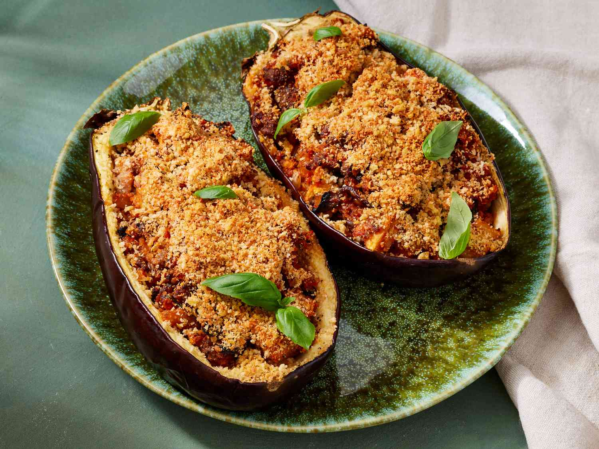

Stuffed eggplant

Description
This delicious stuffed eggplant with a cheesy top is a must-try recipe! Great as a hearty main but you can buy the mini eggplants and use them for a side dish or appetizer.
Ingredients
- eggplant
- olive oil
- seasoning
- sausage
- pasta sauce
- vegetables
- Bread crumbs
- cheese
Steps
- Scoop out the flesh, brush the shells with oil, and season.
- Chop the reserved eggplant flesh into bite-sized pieces.
- Cook sausage, vegetables, and garlic in the remaining oil.
- Stir in the reserved eggplant, basil, and sauce. Mix in some of the panko and cheese.
- Stuff the shells and sprinkle the remaining cheese and panko over the top.
- Bake until the eggplant is tender.